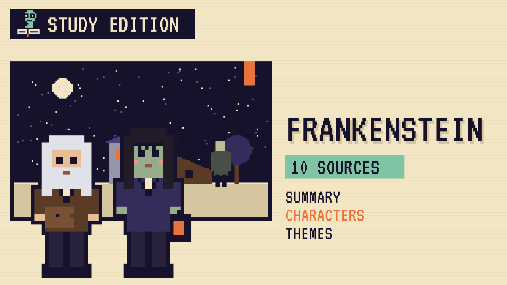

Frankenstein's creature spends a winter secretly helping a poor family. This guide covers the novel and a version where they let him in.
Victor Frankenstein, a young scientist, builds a creature from old parts and brings it to life. Horrified by how it looks, he runs away.
The creature, alone and rejected, hides beside the cottage of the De Lacey family. By listening through the wall he learns to speak and read, and he secretly cuts their firewood. When he finally meets the blind father, the son returns and drives him out.
Bitter and lonely, the creature takes revenge on Victor's family and asks Victor to make him a companion. Victor refuses, and the two chase each other to the Arctic, where the story is told to a ship's captain.
"I was benevolent and good; misery made me a fiend."Frankenstein, 1818, chapter 10
In plain words: He started out good. Loneliness made him a monster.
"I am blind and cannot judge of your countenance, but there is something in your words which persuades me that you are sincere."Frankenstein, 1818, chapter 15
In plain words: De Lacey hears the creature's honesty.
| Word | Meaning |
|---|---|
| hovel | a small, rough shed |
| benevolent | kind and well-meaning |
| fiend | an evil, cruel being |
| countenance | a face |
In an alternative scenario, what if the blind old man stands between his son and the creature and says, "This is our friend"?
In the book, Felix attacks the creature, and the family flees. Rejected again, the creature burns the cottage and turns to revenge against Victor. The story ends in the Arctic, with Victor dead and the creature leaving to die.
Why the author chose it: Shelley shows that cruelty and abandonment, not the way he was made, are what turn the creature into a monster.
| # | Source | Type | Why it's useful |
|---|---|---|---|
| 1 | Shelley-Godwin Archive: the Frankenstein notebooks | MANUSCRIPT | Mary Shelley's handwritten drafts, page by page. |
| 2 | Bodleian Libraries, Oxford | ARCHIVE | Owner of the original Frankenstein manuscripts. |
| 3 | Frankenstein Bicentennial Project, Arizona State | DIGITAL TOUR | Free activities and essays on science, ethics and the novel. |
| 4 | Keats-Shelley House, Rome | MUSEUM | A museum of the Romantic poets, including Percy and Mary Shelley. |
| 5 | Romantic Circles | ARCHIVE | Free scholarly editions and essays on the Romantic era. |
| 6 | The Morgan Library & Museum | MUSEUM | Hosted the major exhibition "It's Alive! Frankenstein at 200." |
| 7 | New York Public Library | ARCHIVE | Home of the Shelley and his Circle collection. |
| 8 | 1818 first edition scans | FIRST EDITION | The anonymous first edition in three volumes. |
| 9 | LibriVox audiobook | AUDIO | Free volunteer readings. |
| 10 | Frankenstein (free text) | FREE TEXT | The complete 1818 text. |